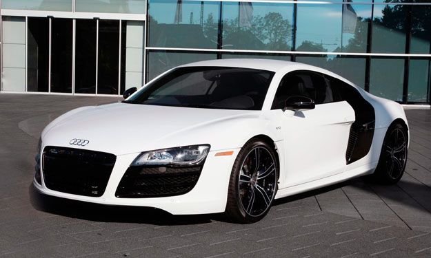
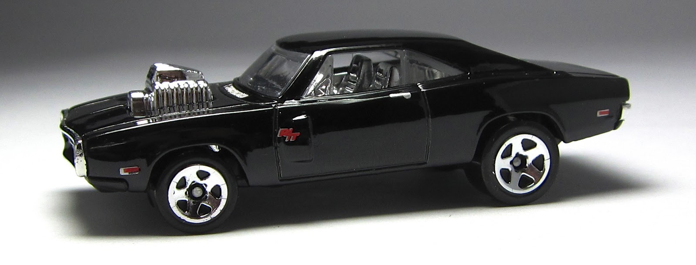
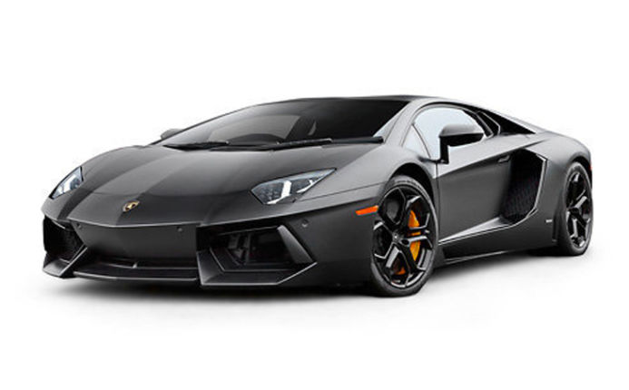
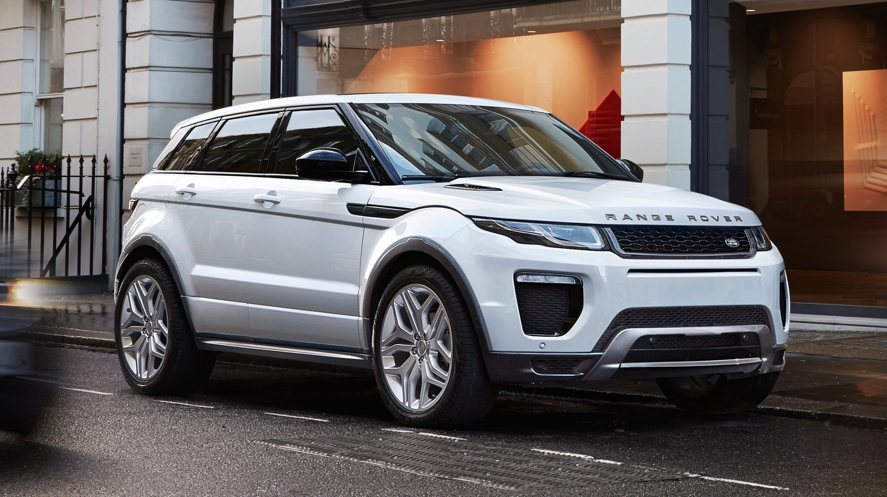

This is a black and white Audi R8. In my opinion this is a very pretty car to look at. I have seen a couple before, and the sound of them running is awesome. I hope you enjoy this car. Google

This is a '70 Dodge Charger. This is the kind of car Vin drives in the Fast and Furious movies. This type of car is in almost all of the 7 movies. This is a great car as well. Enjoy. Yahoo
This is a 2013 Nissan Skyline. This kind of car is also used in the Fast and Furious movies. This isn't the car used in the movie exactly, but it is the same make. This car is drove by Paul Walker. Youtube

This is a lamborghini. This car is $400,000. A lot of famous people own this kind of car. Kim Kardashian bought Kanye a lamborghini for his birthday, actually. It would be an achievment to drive this. Gmail

This is a '17 Range Rover. This car is $86,000. I actually see Rover's all around Davenport. This would also be a super awesome car to own. This is the main car on the Kim K game. Amazon